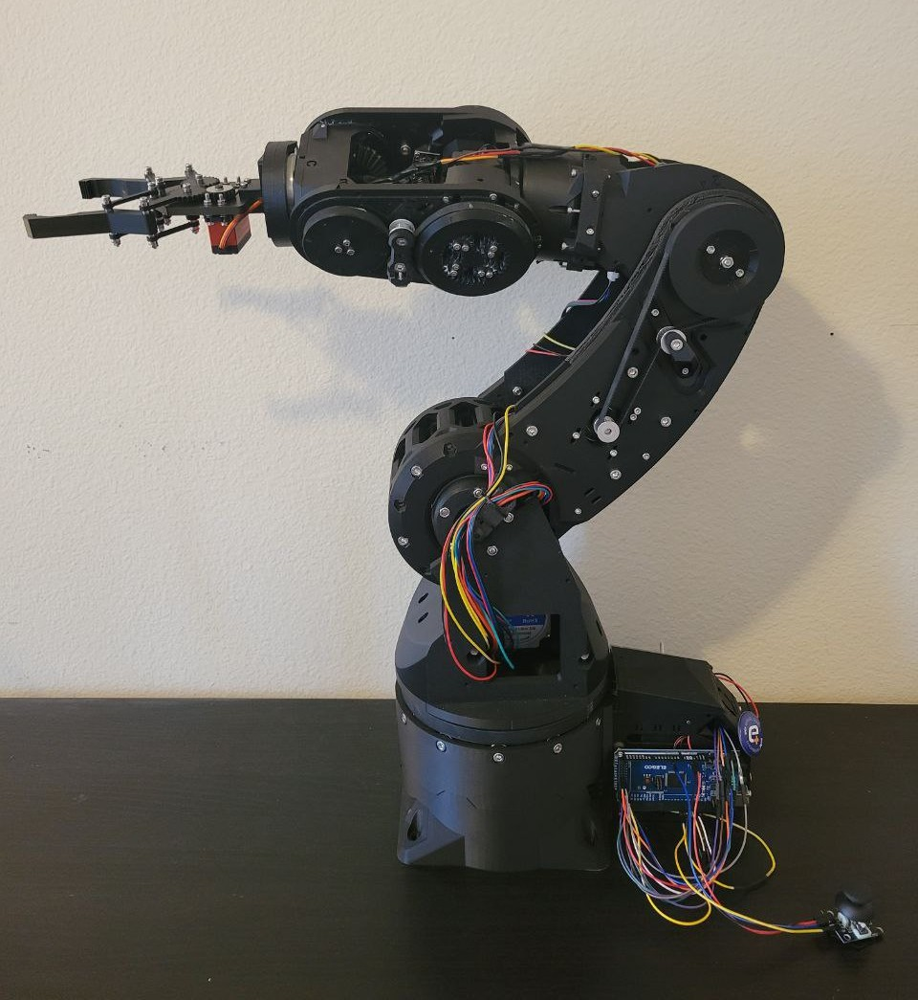
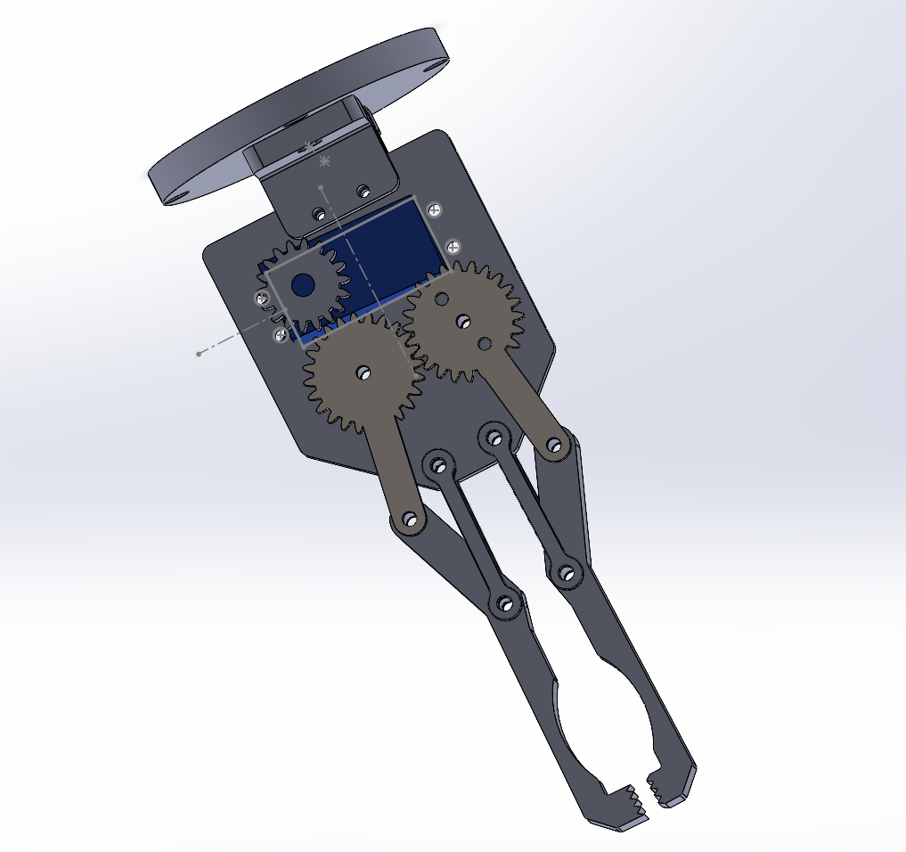
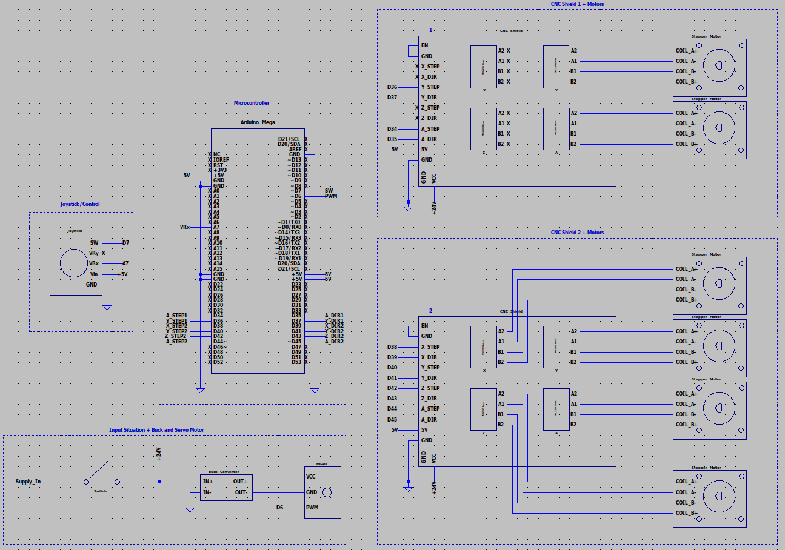

Robotics · Embedded Systems · Computer Vision
Overview
Epione is a 6-degree-of-freedom desktop robotic arm built on the open-source Arctos platform — a community-designed arm known for its printable structure and accessible electronics. The project extends the base platform with a custom end effector, a fully hand-wired electrical architecture, and two independent software control modes: a joystick-driven manual mode for precise positioning, and a vision-based gesture control system using MediaPipe hand tracking.
The name Epione comes from Greek mythology — the goddess of the soothing of pain, consort of Asclepius which fits the mission of creating something for the concept of helping people. Built and integrated from the ground up as a collaborative university project.

01 — Mechanical
All structural components were 3D printed in PLA+ with settings tuned for both rigidity and print reliability. Assembly was more involved than anticipated — provided instructions had gaps and skipped steps, so the CAD STEP file and video references were used extensively throughout. Cover plates were intentionally omitted to maintain continuous access to wiring during development and troubleshooting. Lubricant was applied to all gear interfaces to prevent binding.
A custom linkage-type gripper was designed and fabricated to replace the stock end effector. Actuated by a single 25 kg servo motor, the design prioritizes mechanical simplicity, direct actuation, and easy maintenance. Gripping force is moderate but sufficient for the arm's ~1 kg payload rating. All CAD files are included in the repository.

02 — Electrical
The electrical system was implemented with flexibility in mind — specific pin mappings are not enforced since different builds may require different configurations. Two CNC motor shields stacked on an Arduino Mega provide eight motor ports total, six of which drive the arm's stepper motors. The servo is powered separately through a buck converter for regulated voltage.
The original Arctos design includes magnetically activated limit switches. These were intentionally omitted due to wiring complexity, observed unreliability, and added assembly overhead. The system operates open-loop — no encoder feedback or closed-loop position verification. Safe operation relies on slow motor speeds and manual visual checks.
The schematic below is a simplified version of the official Arctos electrical diagram, trimmed to only the necessary pins. The gesture control mode uses an identical wiring layout — the joystick remains connected but is simply unused.

03 — Programming
The software stack spans both Arduino (C++) and Python, implementing two entirely independent control modes. The shared header and motor abstraction layer keeps firmware clean and mode-agnostic. Each mode is uploaded and run independently — no switching at runtime.
A single moveMotors(dir) function handles all actuator logic through a mode switch. The servo is updated incrementally with position clamping; stepper cases use moveTo() relative to current position. Motor pairs that work in opposition (modes 2/3) have their direction inverted inline.
#include "common.h" void moveMotors(int dir) { int scaledStep = STEP_SCALE * dir; switch (currentMode) { case 1: // servo — end effector servoPosition += dir; servoPosition = constrain(servoPosition, 0, 180); motor7.write(servoPosition); break; case 2: // opposite: motors 0 and 3 motors[0].moveTo(motors[0].currentPosition() + scaledStep); motors[3].moveTo(motors[3].currentPosition() + scaledStep); break; case 3: // together: motors 0 and 3 opposing motors[0].moveTo(motors[0].currentPosition() + scaledStep); motors[3].moveTo(motors[3].currentPosition() - scaledStep); break; case 4: // base rotation — motor 6 motors[5].setMaxSpeed(400); motors[5].setAcceleration(200); motors[5].moveTo(motors[5].currentPosition() + scaledStep); break; case 5: // lower gearbox motors[1].moveTo(motors[1].currentPosition() + scaledStep); break; case 6: // upper gearbox motors[2].moveTo(motors[2].currentPosition() + scaledStep); break; case 7: // wrist motors[4].moveTo(motors[4].currentPosition() + scaledStep); break; } } void stopMotors() { if (currentMode == 1) { motor7.write(servoPosition); // hold servo } else { for (int i = 0; i < 6; i++) motors[i].stop(); } }
The manual firmware uses a joystick (VRx axis + button) alongside Serial Monitor input for motor selection. The joystick button cycles through 7 modes; the Serial port accepts characters 1–7 for direct selection. Servo control is velocity-based — joystick deflection maps to a rotation speed rather than a position, allowing proportional control. Stepper movement uses the joystick magnitude scaled to step size.
| Mode | Actuator | Description |
|---|---|---|
| 1 | Servo (motor 7) | End effector — velocity-based, clamped 0–180° |
| 2 | Motors 1 + 4 | Opposite movement |
| 3 | Motors 1 + 4 | Together (opposing directions) |
| 4 | Motor 6 | Base rotation |
| 5 | Motor 2 | Lower gearbox |
| 6 | Motor 3 | Upper gearbox |
| 7 | Motor 5 | Wrist |
#include "common.h" void setup() { Serial.begin(115200); for (int i = 0; i < 6; i++) { motors[i].setMaxSpeed(MAX_STEPPER_SPEED); motors[i].setAcceleration(MAX_STEPPER_ACCEL); } motor7.attach(SERVO_PIN); motor7.write(servoPosition); pinMode(JOY_SW, INPUT_PULLUP); } void loop() { // --- Serial motor selection --- if (Serial.available()) { char input = Serial.read(); if (input >= '1' && input <= '7') currentMode = input - '0'; } // --- Joystick button cycles modes --- bool btn = digitalRead(JOY_SW); if (btn == LOW && lastButtonState == HIGH) { currentMode = (currentMode % 7) + 1; delay(200); // debounce } lastButtonState = btn; // --- Joystick read + dead zone --- int vx = analogRead(JOY_VX) - 512; if (abs(vx) < DEAD_ZONE) vx = 0; // --- Servo: velocity-based --- if (currentMode == 1 && abs(vx) > SERVO_DEAD_ZONE) { float dt = (millis() - lastServoUpdate) / 1000.0; servoPosition += (vx / 512.0) * SERVO_MAX_SPEED * dt; servoPosition = constrain(servoPosition, 0, 180); motor7.write(servoPosition); lastServoUpdate = millis(); } // --- Stepper: scaled step --- if (vx != 0 && currentMode != 1) moveMotors(vx > 0 ? 1 : -1); for (int i = 0; i < 6; i++) motors[i].run(); }
The gesture control pipeline runs entirely in Python using MediaPipe for real-time hand landmark detection. A state machine governs the interaction: the user first holds a fist for 5 seconds to enter Selection Mode, then holds up 1–5 fingers to choose a motor. After a 2-second activation countdown, single and double finger gestures drive the selected motor forward or backward. A fist held for 5 seconds at any time resets to selection. The back of the hand must face the camera for stable detection; left-hand tracking was found to be unreliable.
Gesture stability is enforced via a rolling buffer — a gesture must be consistent across 8 consecutive frames before being recognized, eliminating false triggers from hand movement.
| Gesture | Hold Duration | Action |
|---|---|---|
| ✊ Fist | 5 seconds | Enter / return to Selection Mode |
| 1–5 fingers | 5 seconds | Select motor 1–5 |
| ☝ 1 finger | Continuous | Move selected motor forward |
| ✌ 2 fingers | Continuous | Move selected motor backward |
| ✊ Fist | < 5 seconds | Stop motor |
| Other / none | — | Idle (no command sent) |
#include "common.h" void setup() { Serial.begin(115200); for (int i = 0; i < 5; i++) { motors[i].setMaxSpeed(MAX_STEPPER_SPEED); motors[i].setAcceleration(MAX_STEPPER_ACCEL); } pinMode(FLOAT_STEP, INPUT_PULLUP); pinMode(FLOAT_DIR, INPUT_PULLUP); myServo.attach(SERVO_PIN); myServo.write(servoPosition); } void loop() { static String inputLine = ""; static bool motorActive{}; char c{}; // --- Parse "motor,cmd\n" from Python --- while (Serial.available()) { c = Serial.read(); if (c == '\n') { int comma = inputLine.indexOf(','); if (comma > 0) { int motor = inputLine.substring(0, comma).toInt(); int cmd = inputLine.substring(comma + 1).toInt(); if (!motorActive && motor >= 1 && motor <= 5) { currentMode = motor; motorActive = true; } if (motorActive && motor == currentMode) { if (cmd == 1) moveMotors(2); else if (cmd == 2) moveMotors(-2); else if (cmd == 0) stopMotors(); } } inputLine = ""; } else inputLine += c; } // --- Fist held 5s → reset selection --- if (fistHoldStart != 0 && millis() - fistHoldStart >= 5000) { currentMode = 0; motorActive = false; fistHoldStart = 0; } for (int i = 0; i < 5; i++) motors[i].run(); }
import cv2, mediapipe as mp, serial, time from collections import deque # --- Setup --- ser = serial.Serial('/dev/ttyACM0', 115200, timeout=0.1) time.sleep(2) hands = mp.solutions.hands.Hands(max_num_hands=1) cap = cv2.VideoCapture(0) # --- State machine --- STATE_IDLE = 0 # waiting for fist trigger STATE_SELECTION = 1 # choosing a motor STATE_DIRECTION = 2 # motor selected, awaiting gesture state = STATE_IDLE; selected_motor = None # --- Config --- STABLE_FRAMES = 8 # consecutive frames for gesture confirmation TRIGGER_HOLD = 5.0 # seconds to hold for state transition SELECTION_DELAY = 2.0 # countdown after motor selection gesture_buffer = deque(maxlen=STABLE_FRAMES) def get_finger_states(lm): # Thumb: tip x vs joint x; others: tip y vs dip y tips = [4,8,12,16,20]; dips = [3,6,10,14,18] fingers = {"thumb": lm.landmark[4].x < lm.landmark[3].x} for i, tip in enumerate(tips[1:]): fingers[["index","middle","ring","pinky"][i]] = \ lm.landmark[tip].y < lm.landmark[dips[i+1]].y return fingers while cap.isOpened(): ok, img = cap.read() if not ok: break res = hands.process(cv2.cvtColor(img, cv2.COLOR_BGR2RGB)) if res.multi_hand_landmarks: finger_count = sum(get_finger_states(res.multi_hand_landmarks[0]).values()) gesture_buffer.append(finger_count) stable = gesture_buffer[0] if len(gesture_buffer)==STABLE_FRAMES \ and all(v==gesture_buffer[0] for v in gesture_buffer) else None # ... state machine transitions + serial send ... else: gesture_buffer.clear() if cv2.waitKey(1) & 0xFF == 27: break cap.release(); ser.close(); cv2.destroyAllWindows()
04 — Demo
05 — Team
This project was a collaborative university effort. The work below would not have been possible without the full team's contributions across mechanical design, assembly, electrical integration, and software.